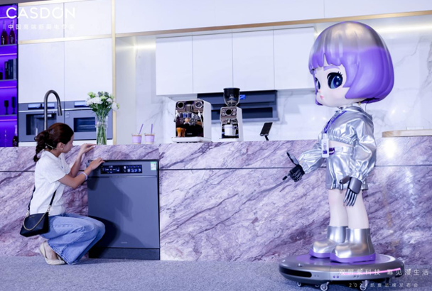

1
厨房智能硬件 · AI厨电交互
凯度让“小紫”住进厨电：AI智能体开始接管蒸烤、净饮、洗碗与烟灶
凯度发布“紫科技2.0 / 漫生活2.0”，首发幂境全隐嵌智能厨电套系，并展示自研 AI 智能体“小紫”的体验店实景交互。

这条新闻最值得看的是“AI 不只停在 App 里”。凯度把“小紫”嵌入蒸烤、净饮、洗碗机、烟灶等产品，覆盖语音交互、烹饪答疑、饮水预约、滤芯提醒、洗碗辅助等场景。
幂境套系采用双 TFT 分屏：左屏做设备操控，右屏承载 AI 交互、菜谱和服务信息。全隐嵌、无拉手、电动开门、云水纹天际线等设计，也把“厨房工业设计”和“智能交互入口”绑到了一起。
小编有话说这比单点语音控制更有参考价值：AI 厨电真正难的不是“能聊天”，而是把菜单、烹饪参数、清洁维护和空间美学放进一个稳定的硬件系统里。